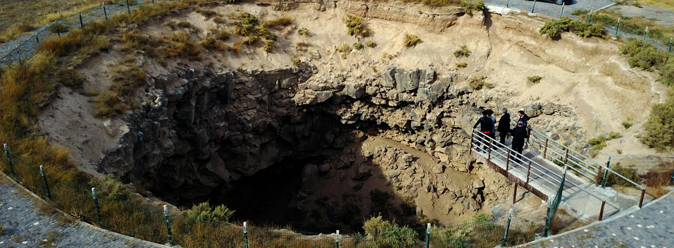
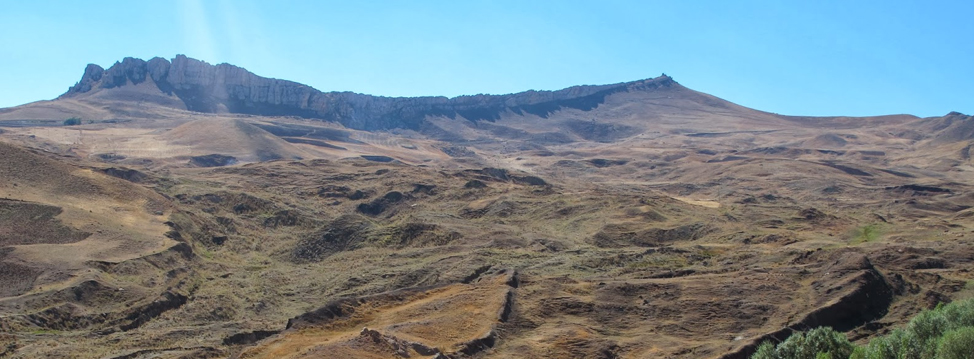

Ağrı Dağı
4 mevsim karla kaplı olan ve birçok din ve inanış tarafından kutsal kabul edilen Ağrı Dağı, 5.137 mt.lik zirvesiyle Avrupa'nın en yüksek noktasıdır. Ağrı Dağı, hem tırmanış hem de doğa yürüyüşü açısından oldukça önemli bir turizm değeridir. Marco Polo'nun asla çıkılamayacak dediği Ağrı Dağı’nın Nuh'un Gemisine ev sahipliği yaptığına inanılmaktadır.
Büyük ve Küçük Ağrı Dağları, Meteor Çukuru ve Nuh’un Gemisinin bulunduğu alanlar 2004 yılında Ağrı Dağı Milli Parkı ilan edilmiştir. Ağrı Dağı eteklerinde bulunan sazlıklar, uluslararası öneme sahip olup birçok göçmen kuşa ev sahipliği yapmaktadır. Iğdır ve Doğubayazıt'ın her noktasından görülebilen Ağrı Dağı’na tırmanışlar Iğdır ve Doğubayazıt’tan yapılabilmektedir.

Ağrı - İshakpaşa Sarayı
Ağrı Dağı’nın hemen yanı başında Doğubayazıt ilçe merkezinde yalçın dağ lar arasında tek başına duran İshakpaşa Sarayı, Osmanlı ve Selçuklu mimarisinin en güzel örneklerinden birini oluşturmaktadır. Yapımına 1685’te başlanan ve 99 yıl sonra Çıldır Valisi İshak Paşa ve oğlu Mehmet Paşa tarafından 1784’te bitirilen 116 odalı saray, 7.600 m2 alan üzerine kurulu olup dünyada kalorifer, su ve kanalizasyon teşkilatı olan ilk saraydır.

Ağrı - Meteor Çukuru
60 mtetrelik derinliği ve 35 metrelikçapı ile dünyanın ikinci büyük meteor çukuru, Ağrı’nın Doğubayazıt ilçesinin 35 km doğusunda, Gürbulak Sınır Kapısı’nın hemen yanı başında yer almaktadır.

Ağrı - Nuh’un Gemisi
Ağrı Dağı’nın güneyinde yer alan doğal anıtın, Nuh Tufanı sonucunda karaya oturan Nuh’un Gemisi nedeniyle oluştuğuna inanılmaktadır. Türkiye - İran Transit yoluna 3,5 km. mesafede olan kalıntı turistler için önemli bir ziyaret noktasıdır.

Ağrı - Balık Gölü
34 km2 alana yayılmış olan Balık Gölü, deniz seviyesinden 2.250 m yüksekliği ile Türkiye’nin bu yükseklikteki en büyük gölüdür. Taşlıçay’ın 18 km kuzeydoğusunda bulunan Balık Gölü bir lav seti oluşumudur. Gölün derinliği kimi yerlerde 100 metreyi geçmekte olup kış aylarında tamamen donan göl yüzeyi, ilkbahar ve yaz aylarında ayrı bir güzelliğe sahiptir. Kırmızı pullu alabalık ve sazan balıklarının yaşadığı gölden Doğubayazıt ilçesinin ve civar köylerin içme suyu da karşılanmaktadır.